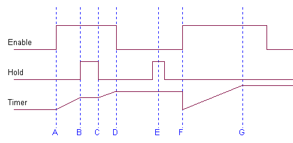
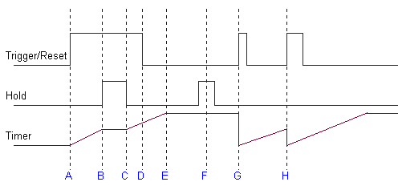

RF 2, Onset Systolische Bloeddruk
|
8 Multi-timer (freerun + start/stop/pauze/reset op basis van ingangssignalen)
12 Multi-timer 2 (triggerable)
26 Multi-timer met opname besturing
39 Triggerable Cyclische Multi-Timer
Cyclische multi-timer, waarbij aantal sub-cycli kan worden ingesteld en iedere subcyclus bestaat uit 3 achtereen geschakelde timers. Het aantal subcycli kan worden ingesteld tussen 1 en oneindig.
Kan zowel flank getriggerd als nivo gestuurd worden gebruikt.
Eventueel kan de timer worden gebruikt voor opname besturing.
Een van de belangrijkste verschillen met eerdere timers is dat de complete timer wordt gereset als een nieuwe startpuls (opgaande flank) wordt aangeboden.
Alle signalen zijn inactief bij de waarde=0 en actief als de signalen >0.
Reageert op de knop stop-timers.
De timer kan zowel nivo-gestuurd als flank-gestuurd worden gebruikt.
Globaal betekent nivo gestuurd de timer loopt zolang de enable ingang >0 is, flank gestuurd wil zeggen dat een opgaande flank op de enable ingang voldoende is om de timer te laten lopen, loopt de timer dan is het nivo van de enable ingang niet meer van belang.
Nivo-gestuurd
De timer loopt als enable>0 en hold=0 en timer-cyclus nog niet is afgerond.
De timer springt naar 00:00 bij het begin van het programma of bij een opgaande flank van de enable ingang.
De timer blijft stilstaan als nog niet gestart of als hold>0 of als timer-cyclus is afgerond.
Een opgaande flank van de enable ingang heeft geen effect als hold>0.

|
A |
Eerste start van een timer-cyclus, door Enable wordt >0 en Hold=0 |
|
B |
Tijdens het lopen van de timer (Enable>0) wordt Hold>0, waardoor de timer blijft stilstaan |
|
C |
Tijdens het lopen van de timer (Enable>0) wordt Hold=0, waardoor de timer weer verder loopt |
|
D |
De timer stopt doordat Enable 0 wordt, de timer blijft op de huidige waarde staan |
|
E |
De hold-functie Hold>0 doet niets, omdat de ingang Enable=0 |
|
F |
De timer wordt gereset en begint te lopen omdat Enable van laag naar hoog gaat |
|
G |
De timer heeft het einde van de timer-cyclus bereikt, terwijl Enable>0, dus blijft de timer op de maximale waarde vaststaan. |
Flank-gestuurd
De timer loopt als gestart door een opgaande flank en hold=0 en timer-cyclus nog niet is afgerond.
De timer springt naar 00:00 bij het begin van het programma of als een opgaande flank.
De timer blijft stilstaan als nog niet gestart of als hold>0 of als timer-cyclus is afgerond.
Een opgaande flank van de enable ingang heeft geen effect als hold>0.

|
A |
Eerste start van een timer-cyclus, door Enable wordt >0 en Hold=0 |
|
B |
Tijdens het lopen van de timer (Enable>0) wordt Hold>0, waardoor de timer blijft stilstaan |
|
C |
Tijdens het lopen van de timer (Enable>0) wordt Hold=0, waardoor de timer weer verder loopt |
|
D |
Er gebeurt niets, immers enkel de opgaande flank van het trigger signaal is van belang |
|
E |
De timer heeft het einde van de timer-cyclus bereikt, terwijl Enable>0, dus blijft de timer op de maximale waarde vaststaan. |
|
F |
De hold-functie Hold>0 doet niets, omdat de timer de maximale waarde reeds heeft bereikt |
|
G |
De timer wordt gereset en begint opnieuw te lopen omdat Enable van laag naar hoog gaat |
|
H |
Nog voordat de timer-cyclus geheel is beëindigd, verschijnt er een opgaande flank op de trigger-ingang, waardoor de timer gereset wordt maar wel door blijft lopen. |
Timer-cyclus
De timer bestaat uit 3 achter elkaar geplaatste timers, die na elkaar worden gestart (d.w.z. de tweede timer start als de eerste timer is afgelopen etc.).
Van iedere afzonderlijke timer kan de tijd worden ingesteld en kan worden opgegeven of gedurende deze timer de opname moet lopen.
Deze set van 3 timers (sub-cyclus) kan een willekeurig aantal keren worden herhaald, zelfs tot in het oneindige als de waarde 0 wordt opgegeven.
|
1 = Enable / Trigger |
het trigger signaal behoeft slechts 1 sample aan de opgegeven conditie te voldoen. |
|
2 = Hold |
de timer wordt tijdelijk gestopt, zonder de timer te resetten |
|
1= SubTijd |
De tijd van 1 enkele subtimer |
|
2 = Mode |
welke van de 3 timers actief is 0 = geen timer actief (of tijdelijk gepauzeerd, is te zien aan waarde cyclus teller) 1 = timer 1 actief 2 = timer 2 actief 3 = timer 3 actief daarnaast komen de volgende overgangswaarden voor 4 = overgang naar een nieuwe start van timer 1 (nieuwe cyclus), maak geen gebruik van deze waarde) 5 = de timercyclus is beeindigd |
|
3 = Totale Tijd |
de verstreken totaal tijd |
|
4 = NCyclus |
geeft aan in welke cyclus de timer zich bevindt, 0 = nog niet gestart 1 ... N = timer bevindt zich in deze cyclus N+1 = timer is geheel klaar |
|
5 = NStart |
Het aantal (geldige) startpulsen |
1 = time 1
2 = record on in timer 1
3 = time 2
4 = record on in timer 2
5 = time 3
6 = record on in timer 3
7 = number of timer cycles (0=oneindig)
8 = flank triggered (anders level)
9 = allow record control
10 = allow stop timers
© Copyright Instrumentele Dienst 1999
SM/GvV, last updated 05-03-1999